UD1 — Introducción a la programación. Lenguaje Java
¿Qué aprenderás en esta unidad?
- Entender qué es un programa, un algoritmo y cómo se relacionan
- Conocer el ciclo de vida del software
- Distinguir entre compiladores e intérpretes, y entender el modelo de Java
- Manejar variables, constantes y tipos de datos
- Escribir y evaluar expresiones con operadores aritméticos, relacionales y lógicos
- Escribir tus primeros programas en Java: entrada, procesamiento y salida
1. Conceptos fundamentales
1.1 Programador y usuario
Antes de escribir una sola línea de código, conviene tener claros dos roles:
- Un programador/a escribe las instrucciones que un ordenador debe seguir.
- Un usuario/a utiliza la aplicación resultante para obtener un resultado.
Tú, en este módulo, eres el programador. Tus compañeros (o tú mismo fuera de clase) son los usuarios.
1.2 Algoritmo, programa y aplicación
| Concepto | Definición sencilla |
|---|---|
| Algoritmo | Secuencia finita de pasos para resolver un problema. Es la receta. |
| Programa | Algoritmo expresado en un lenguaje que entiende el ordenador. Es la receta escrita en Java. |
| Aplicación | Conjunto de programas que trabajan juntos para realizar una tarea compleja. |
Analogía de la receta de cocina
Un algoritmo es como una receta de tortilla francesa: pasos ordenados, sin ambigüedad, que llevan a un resultado concreto. El programa es esa misma receta escrita en código Java para que el ordenador la «cocine».
Pseudocódigo: el paso intermedio
Antes de escribir código real, los programadores usamos el pseudocódigo: una mezcla de lenguaje natural y convenciones de programación. Nos permite centrarnos en la lógica sin preocuparnos por la sintaxis estricta.
¿Por qué pseudocódigo?
Imagina que tienes que construir un mueble: primero haces el boceto, luego mides, y finalmente carpinteas. El pseudocódigo es el boceto. Dominar este paso te ahorrará muchos errores al escribir código real.
1.3 Programa y procesador
Un programa consta de dos elementos básicos:
- Instrucciones — cada acción que el ordenador debe ejecutar.
- Datos — la información que recibe, procesa y produce.
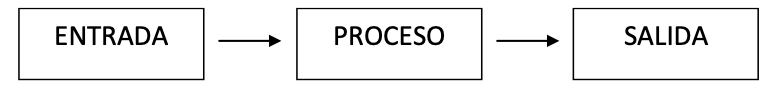
Un primer vistazo a Java
Aunque todavía no conozcas los detalles, tener una imagen mental del código es útil. Este es el programa más famoso del mundo para empezar:
Este pequeño bloque ordena al ordenador mostrar ¡Hola Mundo! en pantalla. Sencillo, pero contiene todos los ingredientes de un programa real.
Paradigmas de programación
Los programas deben ser fiables, legibles, eficientes y modulares. Para lograrlo existen distintos estilos de programar:
- Programación estructurada — secuencias, condicionales y bucles. La base de todo.
- Programación modular — dividir el programa en funciones reutilizables.
- Programación orientada a objetos (POO) — el paradigma principal de este módulo.
- Otros — programación concurrente, funcional, lógica...
¿Qué usaremos?
En este módulo trabajaremos principalmente con programación estructurada (UD1-UD4) y luego pasaremos a POO (UD5 en adelante).
1.4 Ciclo de vida del software
Crear un programa no es solo «ponerse a escribir código». Es un proceso ordenado:
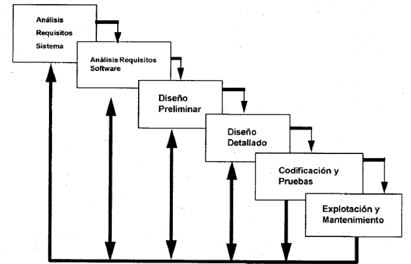
| Fase | ¿Qué se hace? | Analogía |
|---|---|---|
| Análisis | Entender qué necesita el cliente | Los planos de la casa |
| Diseño | Decidir cómo se construirá (algoritmo) | La estructura y fontanería |
| Codificación | Escribir el código | Poner los ladrillos |
| Pruebas | Verificar que todo funciona | Revisar que no haya goteras |
| Mantenimiento | Corregir y añadir funcionalidades | Reformas y reparaciones |
La realidad del desarrollo
El modelo en cascada es un ideal. En la práctica, es habitual volver a fases anteriores cuando se descubre un problema. No te frustres: iterar es parte del proceso.
1.5 Intérprete vs. Compilador
Para que el ordenador entienda nuestro código (escrito en un lenguaje de alto nivel), debe traducirse a código máquina. Hay dos formas de hacerlo:
- Traduce y ejecuta el código línea a línea.
- No genera un fichero ejecutable independiente.
- Más lento, pero más fácil para depurar.
- Ejemplos: Python, PHP.
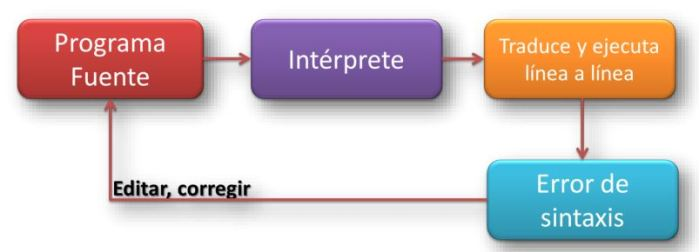
- Traduce todo el código de golpe a un fichero ejecutable.
- El programa resultante es más rápido.
- Si hay un error, hay que recompilar.
- Ejemplos: C, C++.
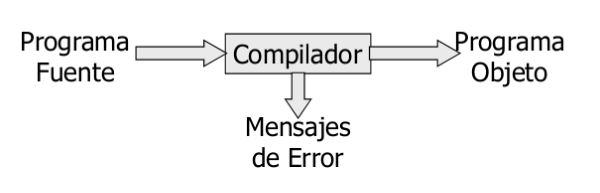
1.6 Java: 50% compilado, 50% interpretado
Java combina ambos mundos con una arquitectura en dos fases:
- Compilación —
javactraduce el código fuente (.java) a bytecode (.class). Este fichero no es ejecutable directamente. - Interpretación — La Máquina Virtual Java (JVM) interpreta el bytecode en cada sistema.
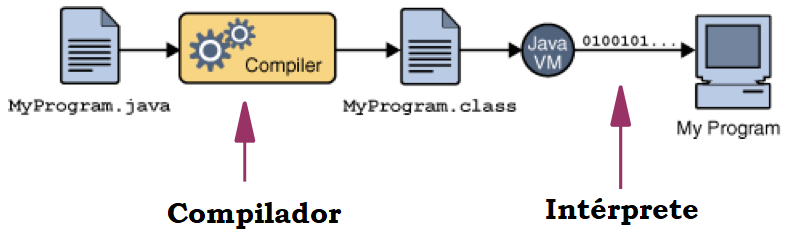
Write Once, Run Anywhere
Gracias a la JVM, el mismo fichero .class funciona en Windows, Linux, macOS, Android… sin cambiar una sola línea. Esta es la ventaja más famosa de Java.
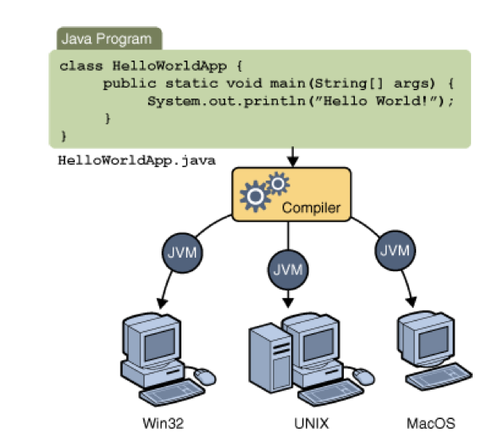
1.7 Corrección de programas
Un programa sin errores es una utopía. Las dos técnicas principales para encontrarlos son:
- Testing — crear un juego de pruebas con entradas y salidas esperadas para verificar el comportamiento del programa.
- Debugging — usar un depurador para ejecutar el programa paso a paso e inspeccionar el valor de las variables en cada momento.
Los tipos de error más comunes:
| Tipo | Cuándo aparece | Ejemplo |
|---|---|---|
| Sintaxis | Al compilar | Olvidar un ; |
| Ejecución | Al ejecutar | Dividir por cero |
| Lógico | El programa funciona pero hace algo incorrecto | Sumar en lugar de restar |
Los errores lógicos son los más peligrosos
Un error de sintaxis el compilador te lo señala. Un error lógico puede pasar desapercibido durante años y causar resultados incorrectos sin ningún aviso.
1.8 ¿Qué lenguaje elegir?
Existen cientos de lenguajes. Aquí una comparativa de los más populares:
| Lenguaje | Nivel | Puntos fuertes |
|---|---|---|
| C | Bajo/medio | Velocidad, control del hardware, base de sistemas operativos |
| Java | Alto | Multiplataforma, empresarial, Android, Big Data |
| Python | Alto | Legibilidad, IA/ML, scripting, ciencia de datos |
Puedes consultar el ranking de popularidad en TIOBE Index.
2. La información
2.1 ¿Qué son los datos?
Un programa manipula datos. Para el ordenador, toda información se reduce a secuencias de 0s y 1s (bits). Como programadores, trabajamos con un nivel de abstracción mayor: usamos tipos de datos con nombres significativos.
Un dato puede aparecer en el programa como variable o como constante.
2.2 Variables
Analogía de la caja etiquetada
Una variable es como una caja etiquetada. La etiqueta es el nombre, lo que hay dentro es el valor, y el tipo de caja determina qué tipo de dato puede contener.
Una variable es un espacio en la RAM del ordenador donde guardamos un dato que puede cambiar durante la ejecución.
Cada variable tiene:
- Un nombre (identificador)
- Un tipo (determina los valores que puede almacenar)
- Un valor (el dato almacenado en ese momento)
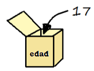
Precisión
El tipo de dato determina cuántos bytes ocupa la variable y qué rango de valores puede almacenar. Con 1 byte (8 bits) tenemos 256 combinaciones posibles:
- Solo positivos → de 0 a 255
- Con negativos → de -128 a 127
2.3 Constantes
Una constante es igual que una variable, salvo que su valor no puede cambiar una vez asignado.
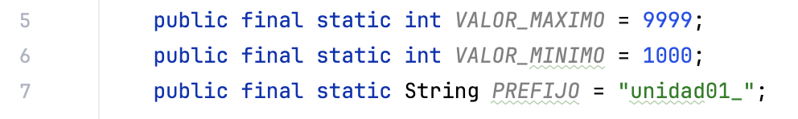
Convenio de nombrado
Por convenio, los nombres de constantes se escriben en MAYÚSCULAS con guiones bajos: PI, IVA_GENERAL, MAYORIA_EDAD. Así cualquier programador las reconoce de un vistazo.
2.4 Nombres e identificadores
Las reglas para nombrar variables y constantes son:
- Solo pueden contener letras, dígitos y
_ - Deben empezar por una letra o
_ - No pueden contener espacios
- No pueden ser palabras reservadas del lenguaje (
while,class,int…)
2.5 Tipos de datos
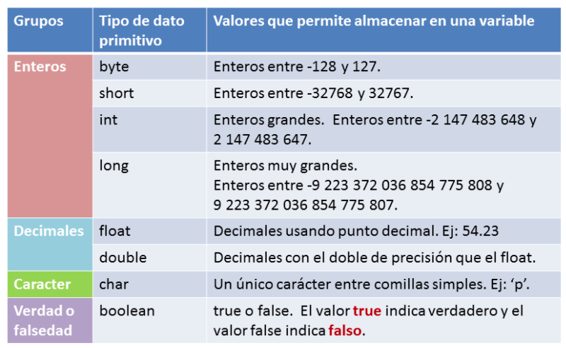
Los datos se clasifican en simples y compuestos:
- Simples — almacenan un único valor:
edad,precio,activo. - Compuestos — agrupan varios datos simples:
fechaNacimiento(día + mes + año),direccion.
El píxel como dato compuesto
Un píxel de color real está formado por tres valores simples: rojo, verde y azul (RGB). Una imagen de 600×400 píxeles necesita 600 × 400 × 3 = 720.000 bytes (~703 KB) en memoria.
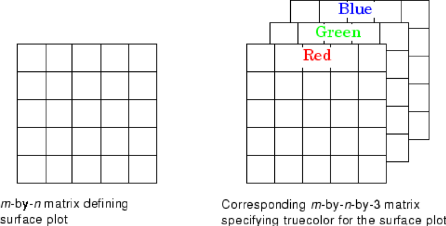
Abstracción de datos
Programar implica seleccionar solo los datos relevantes para el problema. Una persona tiene nombre, edad, altura, color de ojos, hobbies… pero:
- Para la DGT, de un coche interesa: matrícula, marca, modelo, dueño.
- Para un taller mecánico, además: nivel de aceite, presión de ruedas, kilómetros.
Para reflexionar
- ¿Qué tipo de variable usarías para almacenar el número de alumnos de una clase?
- ¿Y para guardar la letra de tu DNI?
- ¿Y para saber si un alumno está aprobado o no?
3. Instrucciones y Operadores
3.1 Expresiones
Una expresión es una combinación de operandos y operadores que produce un resultado al evaluarse.
Los operandos pueden ser: constantes (PI), variables (edad), funciones (raiz(100)), literales (100, "Hola").
| Tipo | Ejemplos |
|---|---|
| Numéricas | edad, 5, 2*PI*radio, (-b + raiz(b²-4ac)) / (2a) |
| Alfanuméricas | "Pedro", "Hola" + " Mundo" |
| Lógicas | true, false, a < b, (v1 < v2) && (v2 < v3) |
3.2 Operadores aritméticos
Realizan operaciones matemáticas. Operandos y resultado son numéricos.
| Operador | Significado | Ejemplo |
|---|---|---|
^ ó ** |
Potencia | 2^8 → 256 |
* |
Producto | 3 * 4 → 12 |
/ ó // |
División | 10 / 4 → 2 (si son enteros) |
% |
Resto (módulo) | 10 % 3 → 1 |
+ |
Suma | 5 + 3 → 8 |
- |
Resta | 9 - 4 → 5 |
División entera: ¡ojo!
En la mayoría de lenguajes, dividir dos enteros da un resultado entero (se trunca la parte decimal). 5 / 2 es 2, no 2.5. Para obtener el decimal, uno de los operandos debe ser real.
Prioridad (de mayor a menor):
| Operador | Prioridad |
|---|---|
^ |
Alta |
*, /, % |
Media |
+, - |
Baja |
Usa paréntesis () para alterar el orden cuando sea necesario.
3.3 Operadores relacionales
Comparan dos expresiones y devuelven verdadero o falso.
| Operador | Significado |
|---|---|
> |
Mayor que |
< |
Menor que |
== |
Igual |
!= |
Distinto |
>= |
Mayor o igual |
<= |
Menor o igual |
Con x = 10, y = 20:
| Expresión | Resultado |
|---|---|
(x + y) < 20 |
false |
(y - x) <= x |
true |
x == y |
false |
x != y |
true |
3.4 Operadores lógicos
Operan sobre valores lógicos (verdadero/falso) y devuelven un resultado lógico.
| Operador | Descripción |
|---|---|
AND |
Verdadero solo si ambos son verdaderos |
OR |
Verdadero si alguno es verdadero |
NOT |
Invierte el valor lógico |
Tabla de verdad:
| x | y | NOT x | x OR y | x AND y |
|---|---|---|---|---|
| F | F | V | F | F |
| F | V | V | V | F |
| V | F | F | V | F |
| V | V | F | V | V |
Leyes de De Morgan (muy útiles para simplificar condiciones):
Prioridad completa (de mayor a menor):
| Operador | Prioridad |
|---|---|
NOT |
Alta |
^ |
|
*, /, % |
|
+, - |
|
<, >, <=, >= |
|
==, != |
|
AND |
|
OR |
Baja |
3.5 Funciones
Son bloques de código reutilizables que realizan una tarea específica y, generalmente, devuelven un resultado.
La misma función en distintos lenguajes
Imprimir «Hola» en pantalla en varios lenguajes:
También podemos definir nuestras propias funciones. En Java:
4. El lenguaje Java
Java es un lenguaje de propósito general, orientado a objetos y con filosofía WORA (Write Once, Run Anywhere).
Sus características principales:
- Sencillo — sintaxis inspirada en C++, fácil de aprender.
- Orientado a objetos — casi todo en Java es un objeto.
- Robusto — el compilador detecta muchos errores antes de ejecutar.
- Seguro — diseñado pensando en aplicaciones de red.
- Portable — el mismo
.classfunciona en cualquier sistema con JVM. - Multihilo — soporta varias tareas simultáneas de forma nativa.
- Ecosistema enorme — frameworks como Spring, uso masivo en backend empresarial y Big Data.
4.1 Primer ejemplo: ¡Hola Mundo!
Escribe y ejecuta este programa en IntelliJ antes de continuar.
Analizando cada parte:
| Parte | Significado |
|---|---|
public class Main |
Declara una clase llamada Main. El fichero debe llamarse Main.java. |
public static void main(...) |
Método principal: la puerta de entrada al programa. La JVM lo busca para empezar. |
System.out.println(...) |
Imprime el texto en consola y añade un salto de línea. |
Punto y coma obligatorio
Todas las instrucciones en Java terminan con ;. Olvidarlo es el error de sintaxis más frecuente de los primeros días.
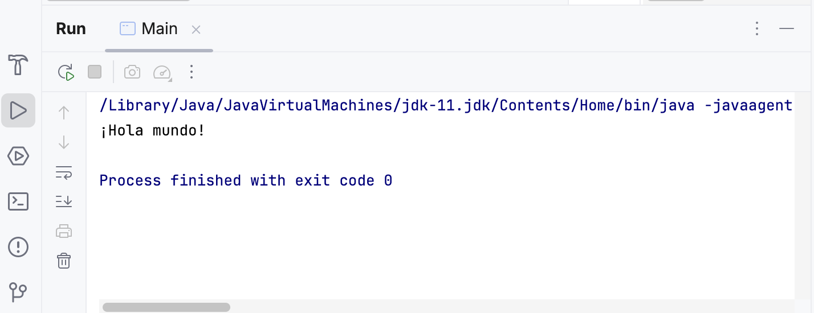
4.2 Elementos básicos del lenguaje
Comentarios
El compilador los ignora. Son notas para los programadores.
Identificadores
Nombran variables, métodos, clases y constantes. Reglas:
- Distinguen mayúsculas de minúsculas (
edad≠Edad) - Empiezan por letra o
_ - No pueden ser palabras reservadas
Convenio CamelCase en Java:
| Elemento | Convenio | Ejemplo |
|---|---|---|
| Clases | Primera letra mayúscula | CalculadoraFacturas |
| Variables y métodos | Primera letra minúscula | nombreUsuario, calcularTotal() |
| Constantes | MAYÚSCULAS con _ |
IVA_GENERAL, PI |
4.3 Tipos de datos en Java
Java tiene 8 tipos primitivos:
| Tipo | Descripción | Memoria | Rango |
|---|---|---|---|
byte |
Entero con signo | 1 byte | -128 a 127 |
short |
Entero corto | 2 bytes | -32.768 a 32.767 |
int |
Entero (el más usado) | 4 bytes | ±2.147 millones |
long |
Entero largo | 8 bytes | Muy grande |
float |
Real precisión simple | 4 bytes | ±3,4×10³⁸ |
double |
Real precisión doble | 8 bytes | ±1,7×10³⁰⁸ |
char |
Un carácter Unicode | 2 bytes | Cualquier carácter |
boolean |
Valor lógico | 1 bit | true / false |
El tipo String
String no es un tipo primitivo — es un objeto. Sin embargo, Java nos permite usarlo de forma muy similar a los tipos simples, lo que facilita enormemente trabajar con texto.
Desbordamiento de rango
Java no avisa si superas el rango de un tipo. Si una variable byte vale 127 y le sumas 1, pasará a valer -128 (comportamiento cíclico). Elige siempre el tipo adecuado para tus datos.
4.4 Declaración de variables y constantes
La f en los float
Los literales decimales en Java son double por defecto. Para asignar a un float hay que añadir f al final: 7.0f. Sin esa f, el compilador reportará «posible pérdida de precisión».
Constantes — se declaran con final:
Ámbito de las variables:
- Variables locales — declaradas dentro de un método. Solo existen dentro de ese método.
- Variables de instancia/clase — las veremos en POO (UD5 en adelante).
Valores por defecto
Si no inicializas una variable, Java le asigna un valor por defecto: 0 (numéricos), false (boolean), null (objetos). Aún así, es buena práctica inicializar siempre.
Palabras reservadas (no puedes usarlas como identificadores):
4.5 Operadores en Java
Aritméticos
| Operador | Descripción | Ejemplo |
|---|---|---|
+ |
Suma | 5 + 3 → 8 |
- |
Resta | 9 - 4 → 5 |
* |
Multiplicación | 3 * 4 → 12 |
/ |
División (entera si ambos son int) |
10 / 3 → 3 |
% |
Módulo (resto) | 10 % 3 → 1 |
++ |
Incremento en 1 | x++ ó ++x |
-- |
Decremento en 1 | x-- ó --x |
Pre vs. post incremento
x++— usa el valor actual dexy luego lo incrementa.++x— incrementaxprimero y luego usa el nuevo valor.
¿Sabes la diferencia?
Si int x = 5;, ¿cuánto valdrá y en cada caso?
int y = x++;→yvale 5,xpasa a valer 6.int y = ++x;→xpasa a valer 6,yvale 6.
Relacionales
| Operador | Descripción |
|---|---|
>, < |
Mayor que, menor que |
>=, <= |
Mayor o igual, menor o igual |
== |
Igual (¡doble =!) |
!= |
Distinto |
Lógicos
| Operador | Descripción |
|---|---|
&& |
AND — verdadero si ambos son verdaderos |
\|\| |
OR — verdadero si alguno es verdadero |
! |
NOT — invierte el valor |
Asignación compuesta
Combinan asignación con una operación aritmética:
| Operador | Equivalencia |
|---|---|
+= |
a = a + b |
-= |
a = a - b |
*= |
a = a * b |
/= |
a = a / b |
%= |
a = a % b |
Precedencia de operadores (de mayor a menor)
[],.,()++,--,-(unario),!*,/,%+,-<,>,<=,>===,!=&&||=,+=,-=,*=,/=…
4.6 Conversión de tipos (Casting)
Casting implícito
Java lo realiza automáticamente cuando convierte a un tipo más amplio (sin pérdida de información):
Casting explícito
Necesario cuando convertimos a un tipo más estrecho (puede haber pérdida de información):
boolean y String no se pueden castear
No existe conversión directa entre boolean y tipos numéricos, ni entre String y primitivos mediante casting. Para eso existen métodos específicos.
Conversión con String
4.7 La clase Math
Proporciona funciones matemáticas avanzadas sin necesidad de importar nada (viene en java.lang).
4.8 Literales
Los literales son valores escritos directamente en el código:
| Tipo | Literales | Ejemplos |
|---|---|---|
| Lógicos | true, false |
boolean activo = true; |
| Enteros | Decimal, octal (0), hex (0x) |
42, 052, 0x2A |
| Entero largo | Añadir L |
1234567890L |
| Reales (double) | Con punto decimal | 3.14, 1.52e1 |
| Reales (float) | Añadir f |
3.14f, 1.52e1f |
| Carácter | Entre comillas simples | 'a', '\n', '\t' |
| Cadena | Entre comillas dobles | "Hola mundo" |
Secuencias de escape habituales:
| Secuencia | Significado |
|---|---|
\n |
Nueva línea |
\t |
Tabulador |
\\ |
Barra inversa \ |
\" |
Comillas dobles " |
\' |
Comilla simple ' |
4.9 Entrada y salida estándar
Salida: System.out
Entrada: Scanner
La clase Scanner simplifica la lectura de datos del teclado.
Métodos de lectura disponibles:
| Método | Tipo devuelto |
|---|---|
nextLine() |
String — lee hasta el Enter |
next() |
String — lee hasta el primer espacio |
nextInt() |
int |
nextDouble() |
double |
nextFloat() |
float |
nextLong() |
long |
nextBoolean() |
boolean |
El error más común de 1.º DAM: el 'Enter fantasma'
Cuando lees un número con nextInt() o nextDouble(), el Scanner consume los dígitos pero deja el \n (Enter) en el buffer. Si la siguiente lectura es un nextLine(), leerá ese Enter vacío y parecerá que se saltó la pregunta.
Solución: añadir sc.nextLine(); extra después de leer un número:
📝 Resumen de la unidad
| Concepto | Clave |
|---|---|
| Algoritmo | Secuencia finita de pasos para resolver un problema |
| Programa | Algoritmo escrito en un lenguaje de programación |
| JVM | Permite que Java sea multiplataforma |
| Variable | Espacio en RAM con nombre, tipo y valor (cambiable) |
| Constante | Como variable pero su valor no cambia (final) |
| Tipos primitivos | int, double, boolean, char… (8 en total) |
| Operadores | Aritméticos, relacionales, lógicos, asignación |
| Casting | Conversión entre tipos de datos |
| Scanner | Clase para leer datos del teclado |
¡Ya tienes la base!
Con los conceptos de esta unidad puedes escribir programas que lean datos del usuario, realicen cálculos y muestren resultados. En las siguientes unidades aprenderás a controlar el flujo (condicionales y bucles) para resolver problemas más complejos.